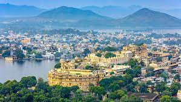

Welcome to My Rajasthan Adventure
This summer, I had the incredible opportunity to explore the royal beauty of Rajasthan, India, with my family. As it was my first time venturing beyond my motherland, Karnataka. Rajasthan, aptly named the "land of kings," captivated my senses with its vibrant culture, rich history, and awe-inspiring landscapes. Join me on this enchanting journey as I share the tales of my adventures in this majestic region.

Interactive Map
Click on the cities to explore more:


Discovering Royalty in the Heart of Rajasthan
Embarking on a journey to Udaipur, the city that once served as the capital of the Mewar Kingdom, unfolded a tapestry of history and grandeur in the western Indian state of Rajasthan.
Udaipur, with its regal charm, narrated tales of a bygone era as I explored multiple palaces that echoed with the footsteps of the royal families. The City Palace, standing as a testimony to centuries of heritage, was a captivating experience.
For a deeper dive into Udaipur's rich history, I delved into the details on the official Udaipur history website, gaining insights into the city's origins and its journey through time.
A Photographic Journey Through Udaipur
City Palace, the abode of one of the longest-ruling royal families in India, unfolded its regal splendor at every turn.
 The serene waters surrounding Jagmandir Palace provided the perfect backdrop for a boat tour, allowing me to witness a breathtaking sunset.
The serene waters surrounding Jagmandir Palace provided the perfect backdrop for a boat tour, allowing me to witness a breathtaking sunset.
 Amidst the palatial grandeur, Udaipur's beautiful palaces emerged as sought-after wedding destinations, hosting celebrations for affluent Indian couples.
Amidst the palatial grandeur, Udaipur's beautiful palaces emerged as sought-after wedding destinations, hosting celebrations for affluent Indian couples.
Textile Treasures in Udaipur's Markets
My Udaipur adventure wasn't limited to palace tours; the city's vibrant markets beckoned, offering a treasure trove of unique textiles. The streets came alive with colors and patterns as I indulged in a shopping spree, bringing home a piece of Udaipur's culture.
Exploring the Pink City's Rich Heritage
Jaipur, often referred to as the Pink City, unfolded its vibrant history and regal charm during my visit to the capital of the Indian state of Rajasthan.
The city, with its iconic palaces and forts, showcased a tapestry of architectural brilliance that spoke volumes about its royal legacy. More insights into Jaipur's history can be found on Jaipur Wikipedia.
A Visual Feast: Jaipur's Palatial Wonders
The Jaipur Palace, an epitome of historical and architectural grandeur, left an indelible mark on my expedition through the Pink City.
 Exploring yet another architectural marvel in Jaipur, I marveled at the intricate details that adorned the palace walls.
Jaipur's cultural richness came to life as I witnessed a vibrant event, capturing the essence of the city's lively spirit.
Exploring yet another architectural marvel in Jaipur, I marveled at the intricate details that adorned the palace walls.
Jaipur's cultural richness came to life as I witnessed a vibrant event, capturing the essence of the city's lively spirit.
Jaipur's Street Markets: A Shopper's Paradise
My Jaipur expedition wasn't confined to historical landmarks alone. The city's infamous street markets beckoned, offering a delightful shopping experience amidst a riot of colors and textures.
Wandering through the bustling streets, I discovered unique textiles, traditional crafts, and treasures that encapsulated the essence of Jaipur's local culture.